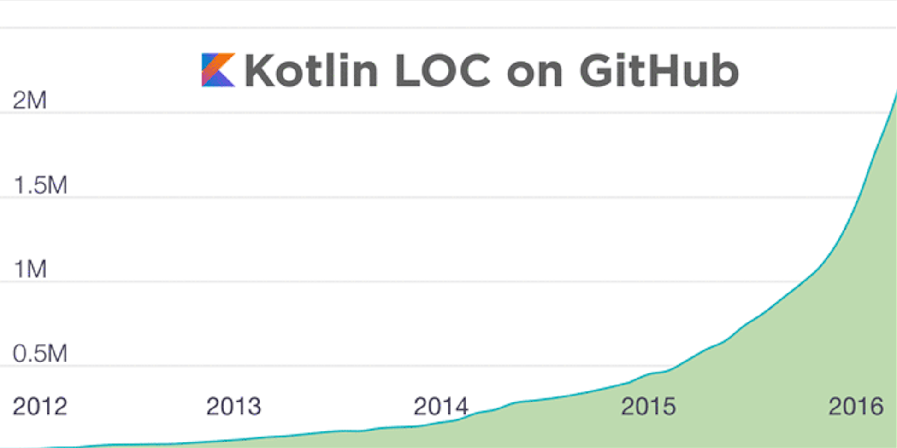

Introduction
2017.5.17
Android Announces Support for Kotlin
By Mike Cleron, Director, Android Platform
Google 宣布官方支持 Kotlin android-developers.googleblog
Android Studio 3.0 将默认集成 Kotlin plug-in ，博客中还说到 Kotlin 有着出色的设计，并相信 Kotlin 会帮助开发者更快更好的开发 Android 应用
Expedia, Flipboard, Pinterest, Square 等公司都有在自家的项目中使用 Kotlin
2017.3.8
墙内地址跪了，只有 gitbook 可以看了。
Kotlin 1.1 正式发布，这次最令人振奋的莫过于协程的发布，有了协程就可以更优雅的完成异步编程了
更多新特性请参看what's new in kotlin 1.1
新特性的文档正在翻译中...
翻译时间并不是很充裕（qi shi shi lan）我会尽力的 :(
2016.3.4
gitbook 墙内访问速度很糟糕 现在有了 墙内地址啦 :)
国内服务器由掘金赞助
稀土掘金：挖掘最优质的互联网技术 / 联合编辑每日精选内容 / 移动端优质阅读体验
本书源码在 github
记得要点 star star star
发现有翻译的不好的或者错误欢迎到 github 提 issue
号外 号外 Kotlin 1.0 正式发布
Android 世界的 Swift 终于发布1.0版本
Kotlin 是一个实用性很强的语言，专注于互通，安全，简洁，工具健全...
无缝支持 Java+Kotlin 项目，可以更少的使用样版代码，确保类型安全。
还换了logo :)
Kotlin LOC (软件规模代码行) 如下图

近期我会重新读一遍 Kotlin 官方文档 并对现在的这份文档进行更新(又立 flag 了) -- 2016.2.16